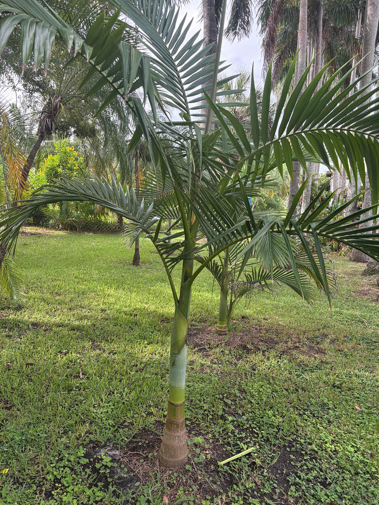

- This palm has one of the smallest known natural ranges of any Australian palm. It is found only in the Myola area of Queensland's Atherton Tableland and is listed as Endangered in Australia and Vulnerable globally by the IUCN — a conservation story as striking as the plant itself.
- Look up when the wind moves the fronds. The upper surfaces are glossy dark green, but the undersides can flash silver-grey when the leaflets turn in the breeze — a detail easy to miss until you catch the right gust.
- Its flowers help prevent self-pollination. Male flowers release their pollen before the female flowers on the same inflorescence become receptive, encouraging cross-pollination between different palms rather than fertilization within a single tree.
The Myola King Palm is native to a remarkably small area of north-east Queensland, Australia. Its entire known natural range is concentrated around Myola on the Atherton Tableland, where it grows in riverine and gallery rainforest along Warrill Creek and the southern banks of the Barron River, at elevations of roughly 350 to 400 meters on volcanic soils west of Cairns.
The species was formally described by botanist John Dowe in 1994 — relatively recently for a large, conspicuous palm — and named for the Myola locality where it was first collected. Fairchild Tropical Botanic Garden in Miami acquired its first specimen in 1998, and Montgomery Botanical Center has also grown it. It remains genuinely uncommon in cultivation anywhere in the world.
- The genus name Archontophoenix combines the Greek archon, meaning ruler or magistrate, with Phoenix, the classical name for the date palm genus — loosely, 'ruling palm.' The species epithet myolensis means 'of Myola,' anchoring the name to the area where this palm naturally grows.
- Within the genus, A. myolensis sits in an interesting middle position: its leaf form and drooping leaflets most closely resemble the widespread Bangalow Palm (A. cunninghamiana), while its floral structure is closer to the Alexandra Palm (A. alexandrae). A practical difference from A. cunninghamiana is the absence of ramenta — the large irregular scales — on the leaflet midribs below, and the cream-white inflorescences. Its fruit is notably larger than that of A. alexandrae.
- One feature is unique to this species within the genus: the stigmatic scar on the ripe fruit is eccentric — positioned off-center — rather than centrally placed as in the other species.
- Its highland origin at 350 to 400 meters elevation, combined with the high annual rainfall of the Atherton Tableland, means this palm is accustomed to plenty of moisture and somewhat cooler temperatures than many lowland tropical relatives. That background makes it well suited to wet, humid conditions in cultivation.
In its native Australian rainforest, Archontophoenix palms are important food sources for fruit-eating birds, which consume the bright red drupes and disperse the seeds. In Florida cultivation, the ripening red fruit clusters may likewise attract opportunistic fruit-eating birds.
The small cream-white flowers are visited by insects. The palm's dense, arching crown also provides shade and canopy structure that smaller wildlife can use for shelter.
Propagation is primarily by seed. The palm is monoecious — male and female flowers are produced on the same individual tree, within the same inflorescence — but the flowers are proterandrous: pollen is shed from male flowers before the female flowers on the same cluster open, which naturally promotes cross-pollination between different trees rather than self-fertilization.
Cream-white, small, and numerous, borne on large branched inflorescences that emerge below the crownshaft (intrafoliar position). Each inflorescence is enclosed at first in a pale green, boat-shaped bract that splits open as the flowers develop; the stalks can reach 50 to 157 cm long and up to 60 cm wide. Flowers are arranged mostly in triads — one female flower flanked by two males.
Toward the tips of the branches, only male flowers occur, singly or in pairs.
Small, elongated, cone- to egg-shaped drupes, roughly 13 to 21 mm long and 10 to 20 mm in diameter. They ripen from green to a bright, waxy red. Each contains a single light-brown seed. In Australia, fruiting has been recorded from December through March (Southern Hemisphere summer); in Florida, timing may shift.
Pinnate (feather-form) fronds reaching about 4 meters long, with 68 to 71 pairs of leaflets arising from a 3.8-meter rachis. The leaflets are leathery, up to 1.1 meters long, dark green on top, and distinctly silver-grey beneath from a dense coating of scales — though the intensity of the silver effect can vary by individual. The crown typically holds 9 to 12 fronds at once.
The leaf bases wrap the stem to form the characteristic blue-green crownshaft.
Solitary, erect, and smooth, green in the upper portions and aging to grey and lightly fissured below, with clean ring scars marking where old fronds attached. The trunk is approximately 30 cm in diameter at chest height, broadening to roughly 50 cm at the base.
Find the blue-green crownshaft first — the smooth cylinder of tightly wrapped leaf bases at the top of the trunk, almost like a second, smaller trunk sitting above the real one. Above it, the long feather-like fronds arch outward. When the wind lifts the leaflets, look for the contrasting silver-grey undersides.
If the palm has fruited, look just below the crownshaft for pendant clusters of small bright-red drupes — and look for the ring scars lower on the trunk that trace every frond this palm has ever dropped. Young plants can be difficult to distinguish from related king palms.
No significant toxicity to people, dogs, or cats is documented. The fruit is not considered edible but is not harmful — otherwise harmless, and people simply don't eat it.
The wild population of this palm is confined to a very small area around Myola on Queensland's Atherton Tableland. The species is listed as Endangered under both Queensland's Nature Conservation Act 1992 and Australia's federal Environment Protection and Biodiversity Conservation Act 1999, and as Vulnerable on the IUCN Red List globally.
Its remaining habitat is vulnerable because the palm occupies a tiny range along streams and riparian forest in a landscape affected by habitat clearance, urban and industrial development, weed invasion, and human disturbance, and the population is currently unprotected.
The specimen growing here at Palma Sola Botanical Park is a rare species in cultivation — rarer than most visitors would guess from looking at it.
The species was formally described only in 1994 by Australian botanist John Dowe — surprisingly recently for a large, conspicuous palm — in a revision of the genus Archontophoenix published in the journal Austrobaileya.


- © Randall Carter (CC-BY-NC), via iNaturalist